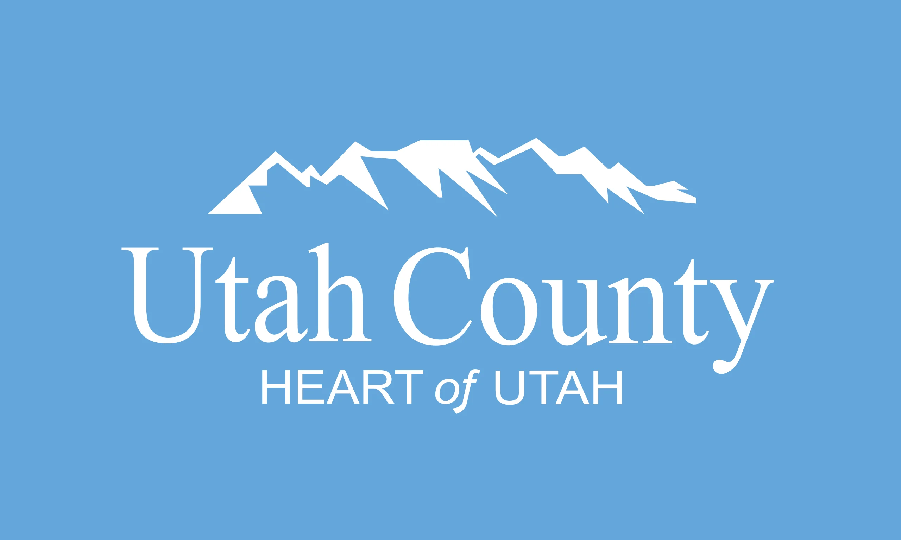
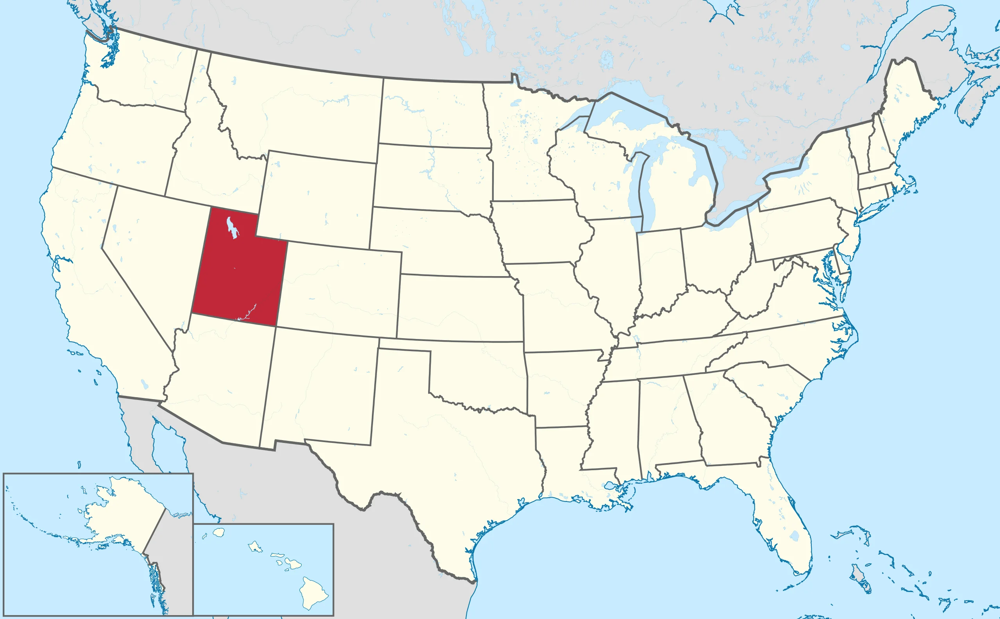

About Us
Population of Utah County
Utah County is the second-most populous county in the U.S. state of Utah. The county seat and largest city is Provo, which is the state's third-largest city, and the largest outside of Salt Lake County.

Population 659,399
History
The legislature of the State of Deseret created a county on January 31, 1850, to govern the civic affairs of Utah Valley, which by the 1850s was bustling with newly arrived settlers. The county name is derived from the valley name, which is derived from the Spanish name (Yuta) for the Ute Indians. The State of Deseret dissolved soon after (April 5, 1851), but the counties it had set in place continued.
Geography
Utah County terrain ranges from stiff mountain ranges in the east (the Wasatch Range), dropping steeply to a large
lake-filled valley. Most of the comparatively level ground is dedicated to agriculture or developed uses, while most of
the steep terrain is covered with arid-climate forestation.
The county has an area of 2,144 square miles (5,550 km2), of which 2,003 square miles (5,190 km2) is land and 141 square
miles (370 km2) (6.6%) is water.
Demographics
| Race or Ethnicity | 2020 | 2010 | 2000 | 1990 | 1950 | 1900 |
|---|---|---|---|---|---|---|
| White | 81.6% | 89.4% | 95.7% | 96.4% | 99.6% | 99.9% |
| —Non-Hispanic | 78.6% | 84.2% | 87.7% | 94.8% | n/a | n/a |
| Black or African American | 0.7% | 0.5% | 0.4% | 0.1% | 0.02% | 0.02% |
| Hispanic or Latino | 13.4% | 10.8% | 8.4% | 3.0% | n/a | n/a |
| Asian | 1.6% | 1.4% | 1.2% | 1.0% | n/a | n/a |
| Hawaiian and Pacific Islander | 1.0% | 0.8% | 0.6% | 0.5% | n/a | n/a |
| Native American | 2.0% | 1.0% | 0.6% | 0.7% | n/a | 0.01% |
| Multiracial | 9.0% | 2.7% | 1.4% | n/a | n/a | n/a |
Education
Colleges and universities
Brigham Young University (private)
Utah Valley University (public)
Provo College (private for-profit)
Rocky Mountain University of Health Professions (private for-profit)
Mountainland Technical College (public)

Number of Visits to Page:
Days since last visit:
Mountain Timpanogos

Mount Timpanogos, often referred to as Timp, is the second-highest mountain in Utah's Wasatch Range. Timpanogos rises to an elevation of 11,752 ft (3,582 m) above sea level in the Uinta-Wasatch-Cache National Forest. With 5,270 ft (1,610 m) of topographic prominence, Timpanogos is the 47th-most prominent mountain in the contiguous United States.
Provo Canyon

Provo Canyon is located in unincorporated Utah County and Wasatch County, Utah. Provo Canyon runs between Mount Timpanogos on the north and Mount Cascade on the south. The canyon extends from Orem on the west end to Heber City on the east. Provo Canyon is situated to the east of Utah Valley and grants access to the valleys and Uinta Basin regions that lie beyond the Wasatch front.
Utah Lake

Utah Lake is a shallow freshwater lake in the center of Utah County, Utah, United States. It lies in Utah Valley, surrounded by the Provo-Orem metropolitan area. The lake's only river outlet, the Jordan River, is a tributary of the Great Salt Lake. Evaporation accounts for 42% of the lake's outflow, which leaves the lake slightly saline.
The Y Trail

The most easily recognizable symbol of Brigham Young University is the white, concrete Y that sits on the mountain overlooking the city of Provo. The trail to get there climbs 980 feet and is 1.2 miles long. It is a dirt trail with 13 switchbacks, fairly steep, but not too difficult for small children. This hike is fun for the whole family! And the view at the top is well worth the effort to get there!